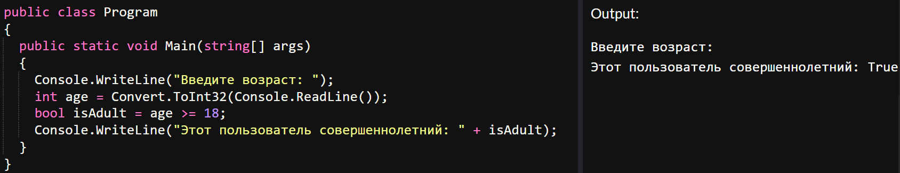

главная
лекции
задания
главная
лекции
задания
Логический тип данных Bool имеет всего два значения: True и False. К логическим выражениям относятся операции сравнения и логические операции. Разберемся с логическими данными на примере задачи из предыдущих лекций: сравним возраст пользователя с заранее заданным числом.
Итак, из прошлых лекций мы знаем, как получить возраст пользователя:
Теперь сравним возраст пользователя с числом 18, чтобы узнать совершеннолетний он или нет:
Мы видим, что значение “true” выводится, когда условие выполнено. Посмотрим на вывод в случае, когда условие не выполняется:
Теперь рассмотрим случай, когда возраст пользователя равен 18 годам. Возраст пользователя не больше и не меньше 18, но при этом он уже считается совершеннолетним. Исправим код так, чтобы число 18 входило в условие. Для этого заменим оператор “>” на “>=”:
Теперь изменим задачу следующим образом: нужно проверить 18 ли лет пользователю. Если пользователю 18 лет – выведем значение true, во всех остальных случаях – false.
Заметно, что для сравнения двух чисел используется не знак равенства, а оператор “==”. Этот оператор нужен для сравнения двух операндов на равенство. Существует и оператор “!=”, который сравнивает два операнда и выводит true, если они не равны и false, если они равны:
Ознакомимся с логическими операциями. Эти операции также возвращают ответ типа bool, как правило их применяют для объединения нескольких операций сравнения.
| -
Операция логического сложения или логическое ИЛИ. Возвращает true, если хотя бы один из операндов возвращает true.
& -
Операция логического умножения или логическое И. Возвращает true, если оба операнда одновременно равны true.
|| -
Операция логического сложения. Возвращает true, если хотя бы один из операндов возвращает true.
&& -
Операция логического умножения. Возвращает true, если оба операнда одновременно равны true.
! -
Операция логического отрицания. Производится над одним операндом и возвращает true, если операнд равен false. Если операнд равен true, то операция возвращает false:
^ -
Операция исключающего ИЛИ. Возвращает true, если либо первый, либо второй операнд (но не одновременно) равны true, иначе возвращает false